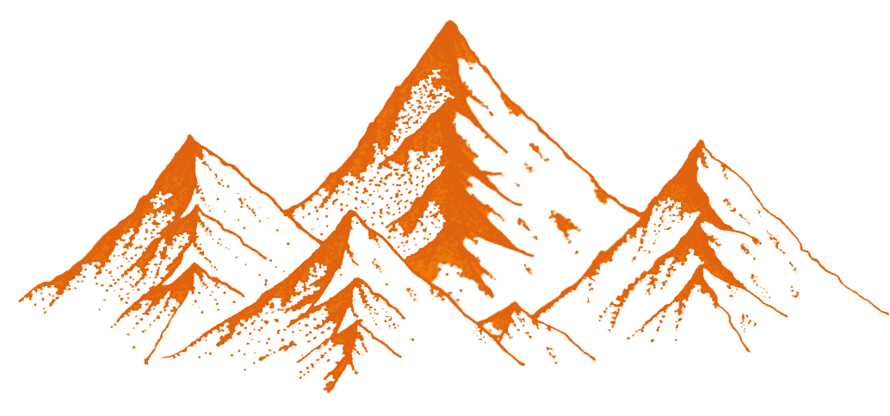
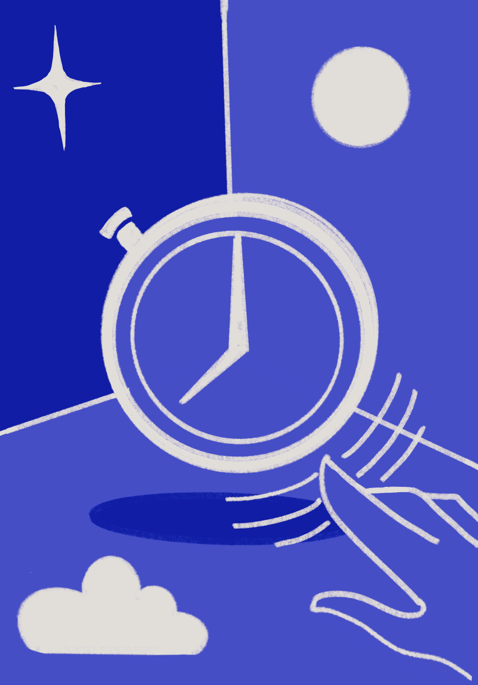
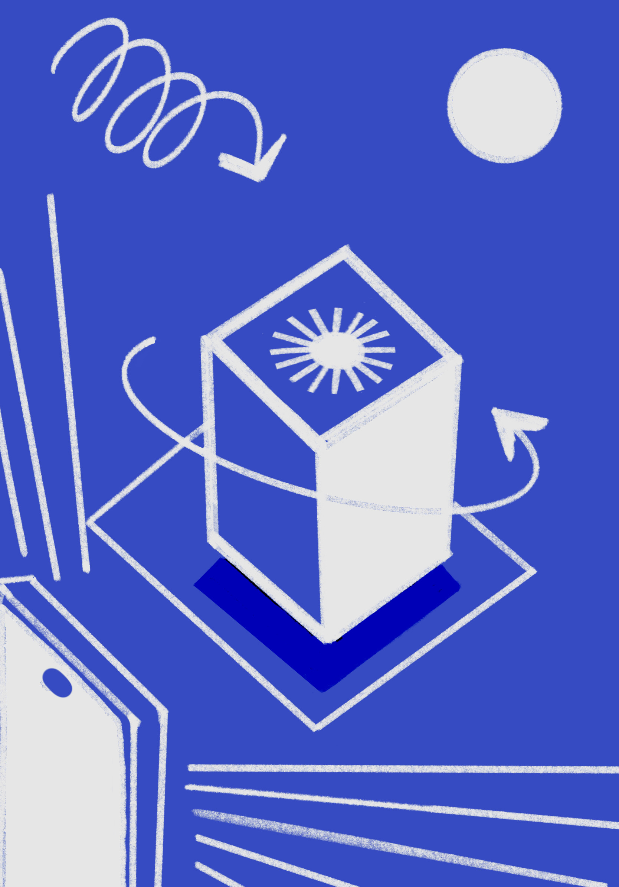

Why do people climb mountains?
Crafting
Meaningful
Experiences
I am an Interaction Designer dedicated to developing research-driven, engaging experiences. My work focuses on the intersection of design and technology, innovating interactions, interfaces, and tools across diverse sectors including space technology and non-profit organisations.
Recent Work
A selection of recent projects. Work under NDA can be discussed in person.
Platform for NLU-based Textual Analysis & Summarization
Stride.io
Intelligent Process Automation platform leveraging natural language understanding to automate manual, repetitive tasks for businesses.
View Project →Rethinking Time: Futurescoping for Timekeeping Devices
Titan Company Ltd
Exploring innovative ways of interacting with time — challenging traditional associations through futurescoping and tangible artefact design.
View Project →
Designing for Virtual Continuum
Holosuit Pvt Ltd
Designing immersive learning objects across web, AR, and VR for an agricultural university — spanning pedagogy design and framework development.
View Project →